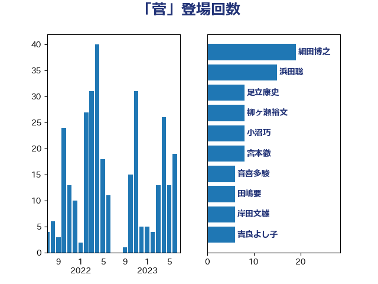

単語「菅」

| 細田博之 | 自由民主党 | 19 回 |
| 浜田聡 | NHK党 | 15 回 |
| 足立康史 | 日本維新の会 | 8 回 |
| 柳ヶ瀬裕文 | 日本維新の会 | 8 回 |
| 小沼巧 | 立憲民主党 | 8 回 |
| 宮本徹 | 日本共産党 | 8 回 |
| 音喜多駿 | 日本維新の会 | 6 回 |
| 田嶋要 | 立憲民主党 | 6 回 |
| 岸田文雄 | 自由民主党 | 6 回 |
| 吉良よし子 | 日本共産党 | 6 回 |
| 赤澤亮正 | 自由民主党 | 5 回 |
| 篠原孝 | 立憲民主党 | 5 回 |
| 石井章 | 日本維新の会 | 5 回 |
| 田村智子 | 日本共産党 | 5 回 |
| 榛葉賀津也 | 国民民主党 | 5 回 |
| 柚木道義 | 立憲民主党 | 5 回 |
| 小川淳也 | 立憲民主党 | 5 回 |
| 宮本岳志 | 日本共産党 | 5 回 |
| 西村康稔 | 自由民主党 | 4 回 |
| 福山哲郎 | 立憲民主党 | 4 回 |
| 猪瀬直樹 | 日本維新の会 | 4 回 |
| 野田聖子 | 自由民主党 | 3 回 |
| 笠井亮 | 日本共産党 | 3 回 |
| 竹内譲 | 公明党 | 3 回 |
| 牧原秀樹 | 自由民主党 | 3 回 |
| 松本剛明 | 自由民主党 | 3 回 |
| 山口俊一 | 自由民主党 | 3 回 |
| 小西洋之 | 立憲民主党 | 3 回 |
| 奥野総一郎 | 立憲民主党 | 3 回 |
| 大塚耕平 | 国民民主党 | 3 回 |
| 吉田とも代 | 日本維新の会 | 3 回 |
| 高木毅 | 自由民主党 | 2 回 |
| 阿部知子 | 立憲民主党 | 2 回 |
| 赤嶺政賢 | 日本共産党 | 2 回 |
| 緒方林太郎 | 無所属 | 2 回 |
| 畦元将吾 | 自由民主党 | 2 回 |
| 清水貴之 | 日本維新の会 | 2 回 |
| 海江田万里 | 立憲民主党 | 2 回 |
| 森山浩行 | 立憲民主党 | 2 回 |
| 梅村みずほ | 日本維新の会 | 2 回 |
| 宮口治子 | 立憲民主党 | 2 回 |
| 和田政宗 | 自由民主党 | 2 回 |
| 古賀友一郎 | 自由民主党 | 2 回 |
| 勝部賢志 | 立憲民主党 | 2 回 |
| 佐藤正久 | 自由民主党 | 2 回 |
| 世耕弘成 | 自由民主党 | 2 回 |
| 高橋千鶴子 | 日本共産党 | 1 回 |
| 高木かおり | 日本維新の会 | 1 回 |
| 青島健太 | 日本維新の会 | 1 回 |
| 長谷川岳 | 自由民主党 | 1 回 |
| 鈴木淳司 | 自由民主党 | 1 回 |
| 重徳和彦 | 立憲民主党 | 1 回 |
| 近藤昭一 | 立憲民主党 | 1 回 |
| 角田秀穂 | 公明党 | 1 回 |
| 西村智奈美 | 立憲民主党 | 1 回 |
| 藤巻健太 | 日本維新の会 | 1 回 |
| 藤川政人 | 自由民主党 | 1 回 |
| 藤井比早之 | 自由民主党 | 1 回 |
| 蓮舫 | 立憲民主党 | 1 回 |
| 萩生田光一 | 自由民主党 | 1 回 |
| 芳賀道也 | 国民民主党 | 1 回 |
| 舟山康江 | 国民民主党 | 1 回 |
| 細田健一 | 自由民主党 | 1 回 |
| 穀田恵二 | 日本共産党 | 1 回 |
| 福岡資麿 | 自由民主党 | 1 回 |
| 磯崎仁彦 | 自由民主党 | 1 回 |
| 石井苗子 | 日本維新の会 | 1 回 |
| 石井啓一 | 公明党 | 1 回 |
| 田村貴昭 | 日本共産党 | 1 回 |
| 田名部匡代 | 立憲民主党 | 1 回 |
| 甘利明 | 自由民主党 | 1 回 |
| 牧山ひろえ | 立憲民主党 | 1 回 |
| 浦野靖人 | 日本維新の会 | 1 回 |
| 江田憲司 | 立憲民主党 | 1 回 |
| 水岡俊一 | 立憲民主党 | 1 回 |
| 梅谷守 | 立憲民主党 | 1 回 |
| 梅村聡 | 日本維新の会 | 1 回 |
| 柘植芳文 | 自由民主党 | 1 回 |
| 林芳正 | 自由民主党 | 1 回 |
| 松本洋平 | 自由民主党 | 1 回 |
| 杉尾秀哉 | 立憲民主党 | 1 回 |
| 木原誠二 | 自由民主党 | 1 回 |
| 有村治子 | 自由民主党 | 1 回 |
| 早坂敦 | 日本維新の会 | 1 回 |
| 志位和夫 | 日本共産党 | 1 回 |
| 後藤祐一 | 立憲民主党 | 1 回 |
| 川田龍平 | 立憲民主党 | 1 回 |
| 山田太郎 | 自由民主党 | 1 回 |
| 山東昭子 | 自由民主党 | 1 回 |
| 山本太郎 | れいわ新選組 | 1 回 |
| 山崎誠 | 立憲民主党 | 1 回 |
| 山岸一生 | 立憲民主党 | 1 回 |
| 山下雄平 | 自由民主党 | 1 回 |
| 小野泰輔 | 日本維新の会 | 1 回 |
| 小池晃 | 日本共産党 | 1 回 |
| 小山展弘 | 立憲民主党 | 1 回 |
| 大野敬太郎 | 自由民主党 | 1 回 |
| 大西健介 | 立憲民主党 | 1 回 |
| 大石あきこ | れいわ新選組 | 1 回 |
| 塩川鉄也 | 日本共産党 | 1 回 |
| 坂井学 | 自由民主党 | 1 回 |
| 吉田統彦 | 立憲民主党 | 1 回 |
| 古川直季 | 自由民主党 | 1 回 |
| 古屋範子 | 公明党 | 1 回 |
| 勝俣孝明 | 自由民主党 | 1 回 |
| 伊藤岳 | 日本共産党 | 1 回 |
| 伊藤孝恵 | 国民民主党 | 1 回 |
| 伊波洋一 | 無所属 | 1 回 |
| 伊東信久 | 日本維新の会 | 1 回 |
| 上野通子 | 自由民主党 | 1 回 |
| 上川陽子 | 自由民主党 | 1 回 |
| おおつき紅葉 | 立憲民主党 | 1 回 |